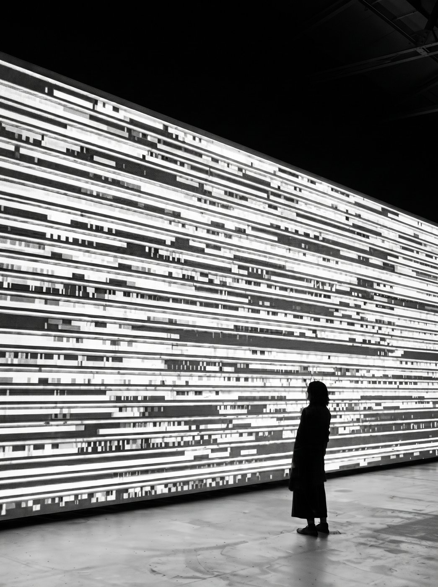
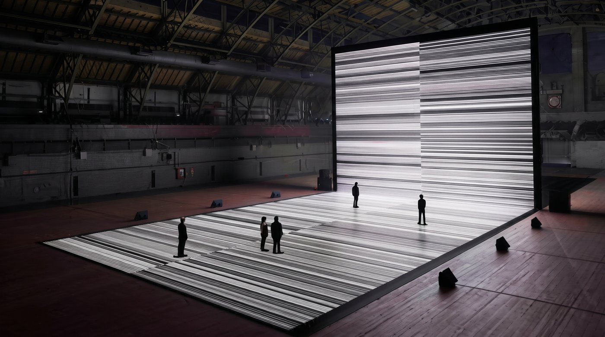
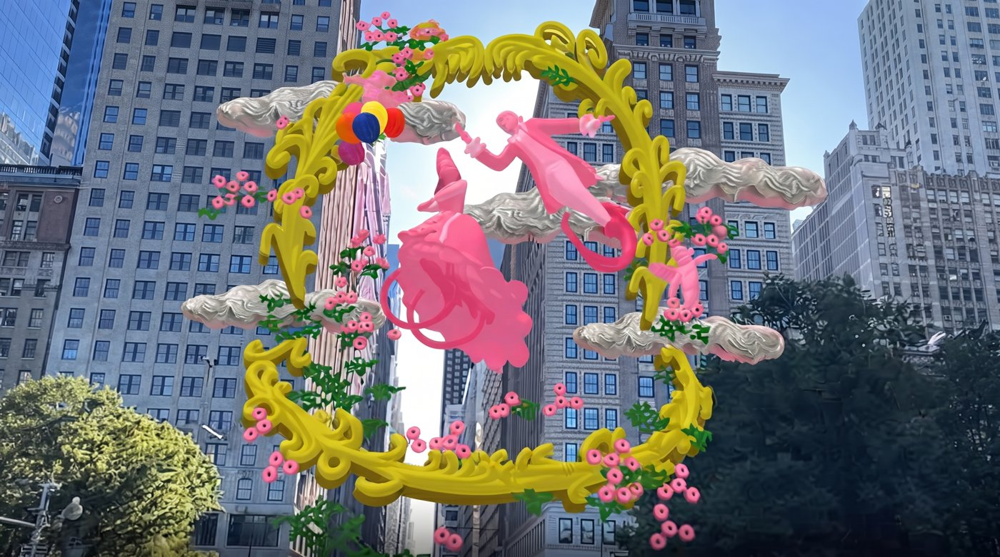
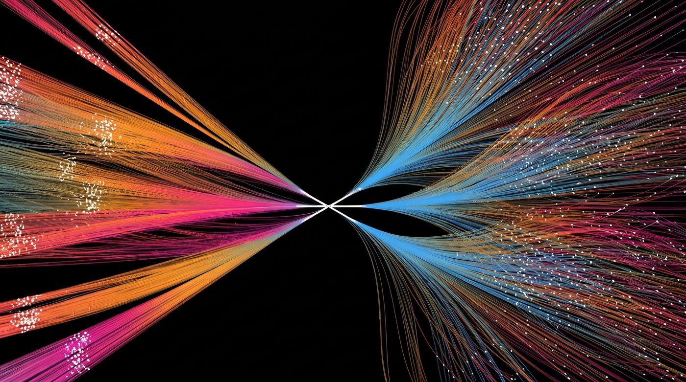
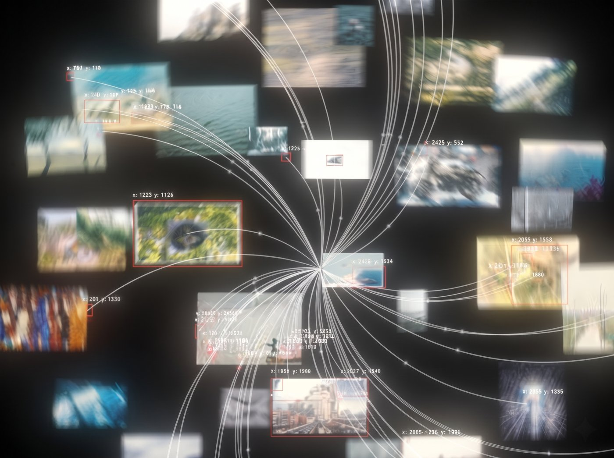
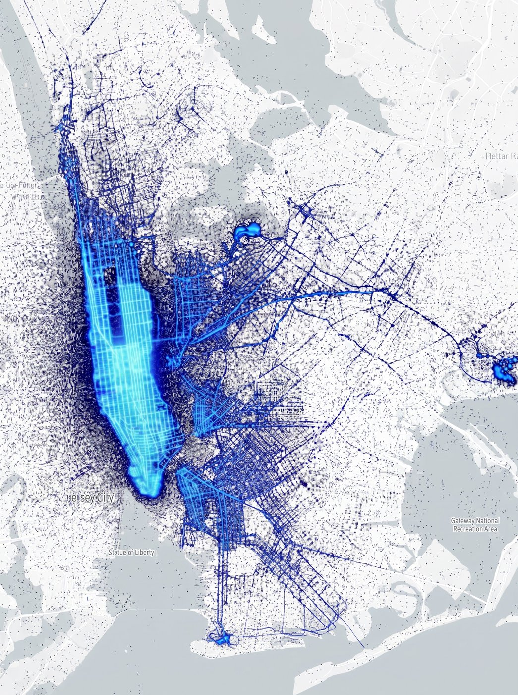
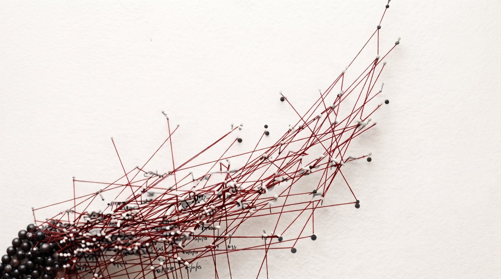
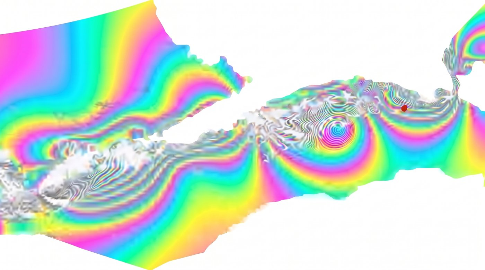
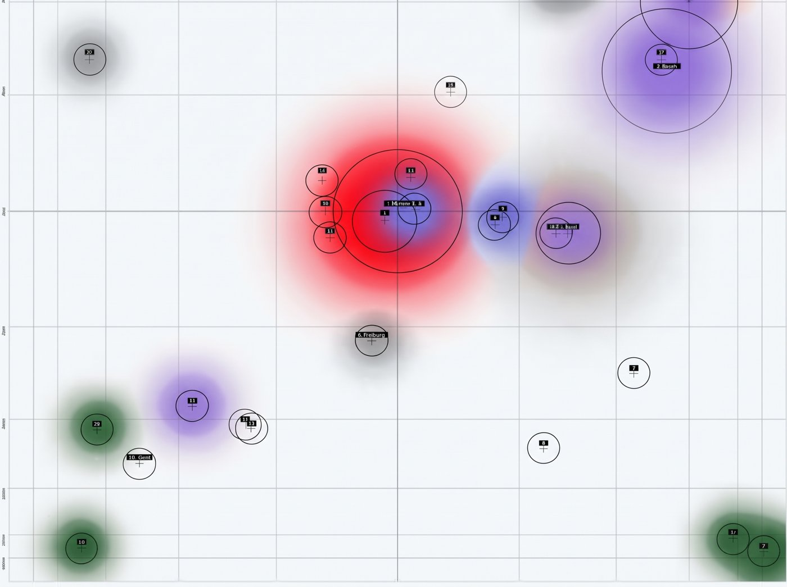

해안선윤성재

엔딩 크레딧송재원

시티 가든-뉴욕서지안

스페이스 하이웨이김나래

공중부양하며 정원 가꾸기조민혁

주얼리 트리이수용

Atlas of LinksSofia Marin

도시 프로젝트 - 뉴욕 아시안 택시박건우

Red Line최수아
파리지앵정현수

Signals from 67PLukas Brenner

스크린 부수기한비

시위현장윤지현

국경에서...임태경

정치적으로 예술하기배상호

토지의 레이어신재훈